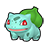
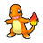
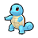

Pokémon Research Lab is located on South Boulevard.
| Pokémon | Level | Circumstances | |
|---|---|---|---|
|
 |
Bulbasaur | 5 | Obtained from Mable during Side Mission 022: A Call from Mable. It is mutually exclusive with Charmander and Squirtle. |
|
 |
Charmander | 5 | Obtained from Mable during Side Mission 022: A Call from Mable. It is mutually exclusive with Bulbasaur and Squirtle. |
|
 |
Squirtle | 5 | Obtained from Mable during Side Mission 022: A Call from Mable. It is mutually exclusive with Bulbasaur and Charmander. |
| Item | Main Mission | Location | Details |
|---|---|---|---|
| TM004 Rock Smash | Main Mission 03: A New Life in Lumiose City | Obtained from Mabel in the Pokémon Research Lab | It is a reward for reaching Mabel's Research Rank 2, but it is always immediately obtained from Mabel as the player always has enough points to reach Rank 2. |
| Item | Location | Details |
|---|---|---|
| Great Ball | On 2F |
The following Side Missions can be obtained in Pokémon Research Lab.
| Side Mission | Giver | Location | Unlock requirement | Rewards |
|---|---|---|---|---|
| A Call from Mable | Mable | Obtained when healing at any Pokémon Center following the battle with Lida if the player has 30+ Pokémon species | Battle Lida during Main Mission 08: Reaching Rank V | 1,000 currency 3x Exp. Candy XS 2x Exp. Candy S Lv.5 Kanto starter |